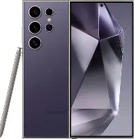

Samsung smartphones offer a wide range of features spanning performance, display, camera, battery, connectivity, and security, designed to cater to diverse user needs. Performance and Hardware Samsung devices are equipped with high-performance processors such as the latest Exynos or Snapdragon chips, ensuring smooth multitasking and gaming. RAM options range from 6GB to 16GB, supporting intensive applications. Storage capacities vary from 128GB to 1TB, often expandable via microSD on select models. Many devices also feature advanced cooling systems for sustained performance during heavy usage samsung.com samsung.com +1 . Display Samsung is renowned for its Super AMOLED and Dynamic AMOLED displays, offering vibrant colors, deep blacks, and high contrast. Screen sizes range from 6.1 inches to over 7 inches on foldable models. High refresh rates of 120Hz or more provide smooth scrolling and gaming experiences. Foldable devices like the Galaxy Z Fold series offer flexible displays for multitasking samsung.com samsung.com +1 . Camera Samsung smartphones feature multi-lens camera systems, including wide, ultra-wide, telephoto, and macro lenses. Advanced features include optical image stabilization (OIS), 100x Space Zoom, Night Mode, Super Steady video, and AI scene optimization. Front cameras support high-resolution selfies and video calls, often with portrait and beauty modes samsung.com samsung.com +1 . Battery and Charging Battery capacities range from 3,500mAh to 5,000mAh or more, supporting fast charging, wireless charging, and reverse wireless charging. Many models include power-saving modes and adaptive battery management to extend usage throughout the day samsung.com samsung.com +1 . Connectivity Samsung devices support 5G, 4G LTE, Wi-Fi 6, Bluetooth 5.3, NFC, and GPS. Dual SIM options and eSIM support are available on select models. Foldable and flagship devices often include ultra-wideband (UWB) technology for precise device tracking and smart home integration samsung.com samsung.com +1 . Security and Software Samsung smartphones run One UI, a customized Android interface with features like Edge Panels, Samsung DeX, and multitasking enhancements. Security is reinforced with Samsung Knox, providing hardware-backed protection, secure folders, and biometric authentication via fingerprint sensors or facial recognition samsung.com samsung.com +1 . Additional Features Water and dust resistance (IP68 rating on most flagship models) Stereo speakers with Dolby Atmos for immersive audio S Pen support on Galaxy Note and select Fold models for productivity AI-powered features like Bixby, Smart Switch, and device optimization tools Samsung continues to innovate across its smartphone lineup, offering devices that balance cutting-edge technology, user-friendly software, and premium design to meet a wide range of consumer needs samsung.com samsung.com +1 .